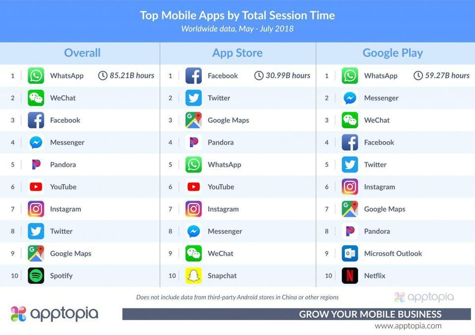
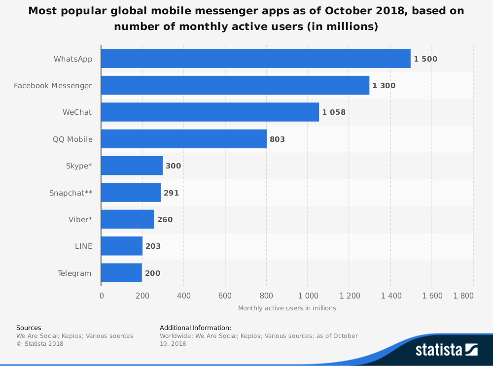

De acordo com a empresa de análise de aplicações, as pessoas gastaram coletivamente 85 000 milhões de horas no WhatsApp entre os meses de maio e julho, como pode ser observado na Figura que se segue.
Figura 7.1: Tempo gasto nas aplicações
Claramente, o WhatsApp é a aplicação de mensagens escolhida pelos utilizadores, seguida pelo Facebook e o WeChat. Se considerarmos apenas as aplicações móveis de mensagem, verifica-se que o WhatsApp mantém a liderança, como demonstra a Figura que se segue. Os dados estatísticos apresentados são referentes ao mês de outubro de 2018
Tendo em conta que o WhatsApp e o Facebook Messenger pertencem à mesma companhia, o WeChat é realmente o maior rival do WhatsApp no mercado. O WeChat começou por ser restrito à China. Por essa razão eles detêm a maior parte desse mercado. Neste momento, o WeChat tem cerca de 1000 milhões de utilizadores ativos. Contudo, o fenómeno WhatsApp é a aplicação móvel de mensagens mais populares em todo o mundo, com base no número de utilizadores ativos mensais (em milhões).
Em termos de chamadas de voz gratuitas, o Skype é o maior competidor do WhatsApp, serviço que ambas fornecem. No entanto, enquanto o WhatsApp foi criado para os dispositivos móveis, o Skype foi criado para o computador. Assim, quando o mundo passou a ficar mais móvel e as comunicações passaram do escritório para os nossos bolsos, o Skype ficou um pouco para trás.
Figura 7.2: Popularidade das aplicações de mensagem